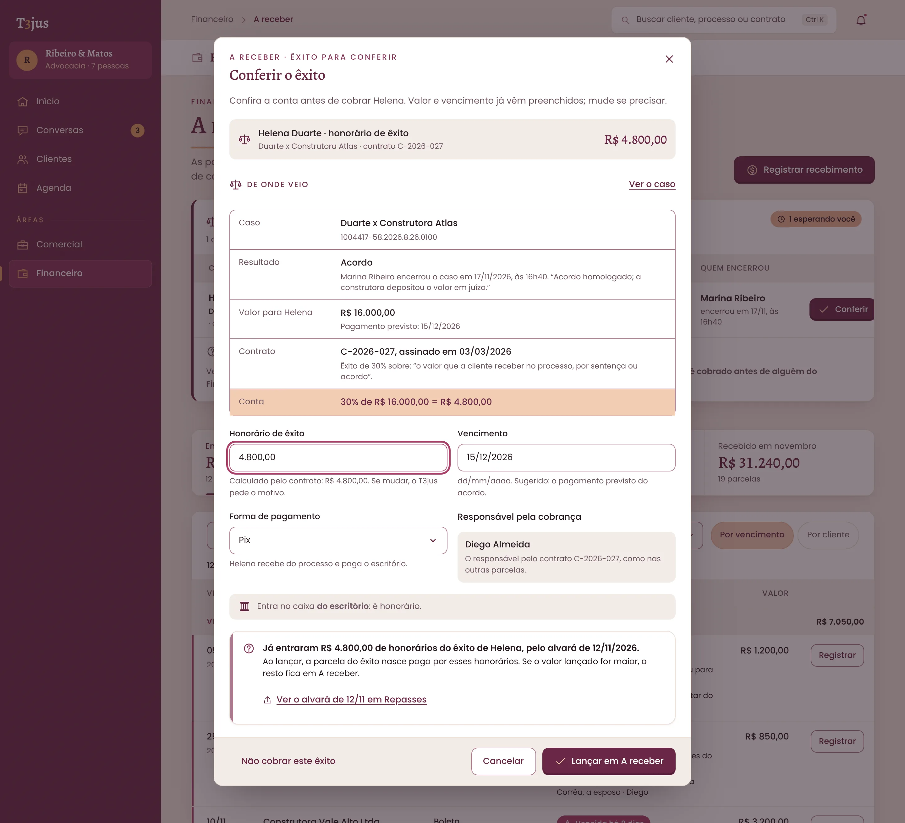

ea-conferir
Conferir o êxito: os honorários do alvará já entraram
Diego. A janela de hoje, com o aviso informativo no fim, logo acima de “Lançar em A receber”: “Já entraram R$ 4.800,00 de honorários do êxito de Helena, pelo alvará de 12/11/2026.” e “Ao lançar, a parcela do êxito nasce paga por esses honorários. Se o valor lançado for maior, o resto fica em A receber.”. O aviso toma o lugar da frase “o honorário sai na divisão de Repasses”, que só vale sem honorários já entrados. O botão “Lançar” aponta para o aviso por aria-describedby.